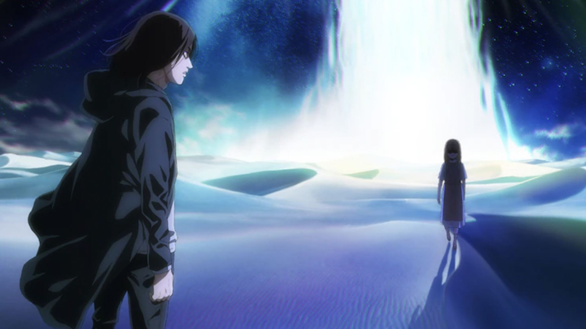

Sobre Nosotros
Apoya esta pagina, para que asi llegue a mas publico.
Este proyecto consiste en reunir en un solo lugar, todo lo reacionado al mundo del anime y sus variaciones.
congentando distintas clasificaciones, al momentode salir, aqui lo encontraras disponible.
Proximamente habra mas secciones, para tener una mayor diversidad del la comunidad Friki y Otaku.
Anime
La temporada final de Shingeki no Kyojin dejaría 9 capítulos pendientes de adaptar
El popular leaker “@SPYTRUE” aseguró en redes que “ya está confirmado” que la 2da parte del Shingeki no Kyojin:
The Final Season, terminará con la adaptación del capítulo 130 del manga de Hajime Isayama. Esto dejaría de
los capítulos 131 al 139 (que corresponden a los volúmenes 33 y 34) pendientes de adaptar ya sea en una
nueva temporada o en una pelicula. Cabe señalar que esta información está pendiente de confirmar.

Cultura Otaku
Evangelion: Encuentran una ilustración de Asuka entre los escombros en Ucrania
Una serie de fotografías de la 6A Lobanovsky Avenue en Kiev, Ucrania, se volvieron virales en foros de comentarios
en Japón. Como escribió el Servicio Estatal de Emergencias de Ucrania en Telegram, un misil impactó en un bloque
de apartamentos de varias plantas (17-18 pisos). En su momento no se informó sobre víctimas y la evacuación estaba
en marcha.